La Production planifie la fabrication et en trace l'exécution : les commandes clients sont découpées en lots, chaque lot en BDT (bons de travail, réalisés à l'atelier) et en BST/BDS (bons de sous-traitance, envoyés chez un prestataire). Un planning unique (page « Production », par poste de travail) porte les deux Gantt — BDT à l'atelier et BST chez les sous-traitants — ainsi que l'affectation des opérateurs aux postes par créneau. Ce manuel le couvre, plus la présence, les commandes & lots, les postes/machines et les deux dashboards.
👤 Pour qui : Programmation (Sylvie) · chefs d'atelier · opérateurs🧭 Dans l'ERP : Sidebar → Production🗂 7 onglets
1
Planning Gantt BDT
Ce qui décide qu'un bon de travail apparaît au planning
Tous les bons de travail d'une commande sont ici, dès que la commande existe — programmer n'est pas produire. On pose la charge avant que la matière arrive : c'est même à cela que sert un planning, sinon on ne voit jamais venir le travail.
Ce qui manque encore à un ordre ne le fait donc plus disparaître de l'écran. Il est signalé, nommément, dans la carte « Ordres de travail programmables, mais pas encore lançables », placée au-dessus du planning : un ordre par ligne, avec ce qu'il attend — matière non réceptionnée ou préparation technique en attente. Vous pouvez le programmer ; vous saurez seulement qu'il ne faut pas encore le lancer.
Depuis le 9 septembre 2026, ce blocage se joue lot par lot. Auparavant, une seule préparation en attente gelait toute l'affaire : des pièces parfaitement prêtes restaient invisibles à cause d'une autre pièce en retard. Désormais, sur une affaire de trois pièces dont une seule attend son plan, les deux autres partent en fabrication.
Pour savoir où en est chaque lot, ouvrez la fiche affaire (Commercial › Affaires) : le tableau « Production — lots » porte une colonne Fabricable qui indique, lot par lot, Prêt à fabriquer ou ce qui manque encore (préparation technique, matière non réceptionnée), avec le compte des lots prêts en tête de tableau.
À quoi ça sert. C'est le planning de la journée d'atelier, organisé par poste de travail (et non par personne) : chaque ligne du Gantt est un poste, chaque barre est un BDT — une opération de fabrication d'un lot. La Programmation y classe les BDT en attente, les glisse sur les postes au bon horaire, puis suit leur avancement (programmé → reçu → soldé). C'est aussi ici que l'on affecte les opérateurs aux postes par plage horaire.
Ce que vous voyez
C'est désormais le seul planning de l'atelier : il n'y a plus de page « Affectation » séparée, tout se fait ici. De haut en bas :
Barre d'outils : sélecteur de date avec flèches ‹ › (jour précédent / suivant), filtres d'activité et de type de process (voir sous-onglets ci-dessous), légende des couleurs, champ de recherche « N° d'affaire… » et bouton orange « Nouveau BDT ». En haut à droite du bandeau du service, deux boutons côte à côte, utilisables depuis n'importe quel onglet : « Demande d'achat » et « PV de non-conformité » (rouge) — réservés aux personnes qui ont l'écriture sur la Production, signés par matricule + code PIN (voir plus bas).
7 tuiles de statistiques : Programmés, Reçus, Soldés, Soldés NC, En attente, Sous-trait., Process.
Goulotte « BDT à classer / en attente de programmation » au-dessus du planning : les cartes y sont triées par échéance client, puis par lot et rang dans la gamme — c'est un simple tri d'affichage (le vrai chemin critique est contrôlé à la pose, voir plus bas). Chaque carte porte la couleur de son lot, la pièce, la durée, l'activité et l'échéance, et en plus :
une mini-barre en deux parties — le réglage hachuré violet, puis la réalisation bleue — avec « Réglage 0,5 h · Réalisation 3,5 h » (ou « réglage non renseigné » en orange quand il est inconnu) ;
une pastille « M2 · 2/3 » sur un morceau de BDT découpé ;
une ligne « au plus tôt : 15/09 8h30 · après le réglage de … » quand l'étape précédente du lot impose une heure de départ ;
le bouton ciseaux pour découper le BDT — c'est le seul endroit où l'on découpe — et, sur chaque morceau d'un BDT découpé, le bouton « Annuler la découpe » (flèche de retour, orange).
On peut aussi y redéposer une barre du planning pour la déprogrammer. Un BDT n'apparaît sur le planning qu'une fois programmé : tant qu'il est « à programmer », il reste dans la goulotte.
Carte « Enchaînements à revoir » (rouge, affichée seulement s'il y en a) : les étapes déjà posées avant leur au plus tôt — avant la fin du réglage de l'étape précédente, avant la fin complète d'une étape suivie d'une OAS ou d'un envoi en sous-traitance, ou avant le retour d'une sous-traitance. Rien n'est décalé automatiquement : un clic sur une ligne ouvre l'étape sur son planning.
Le Gantt : lignes = postes de travail (avec le nombre de process et de machines du poste), colonnes = heures de 5 h à 23 h. Chaque barre BDT est colorée selon son statut et porte un liseré gauche à la couleur de son lot — la même couleur que sur le planning BST, pour suivre un lot d'un planning à l'autre. En tête de barre, un segment hachuré représente le temps de réglage ; un trait sombre marque sa fin, qui est le repère du chemin critique. La 3ᵉ ligne de la barre dit « 8h · 0,5 + 3,5 h · client » (heure de début · réglage + réalisation). Une pastille rouge (maillon brisé) signale une barre posée avant son au plus tôt. Dans la colonne de gauche, chaque poste offre quatre sous-cases Matin / Journée / Après-midi / Soirée qui reçoivent les opérateurs affectés.
« Affectation des ressources aux postes » : les opérateurs du jour classés en cinq colonnes (Matin, Journée, Après-midi, Soirée, Absent). On glisse une carte — ou on la sélectionne au clic — vers une sous-case de créneau d'un poste du planning.
Couleurs des barres et statuts d'un BDT :
à programmer (dans la goulotte),
programmé (bleu, bordure pointillée),
reçu (jaune : l'opérateur a pris le travail),
soldé (vert : opération terminée),
soldé NC (rouge : terminé avec non-conformité).
Un petit carré blanc ou noir devant le numéro du BDT signale une oxydation incolore ou noire à produire pour le lot.
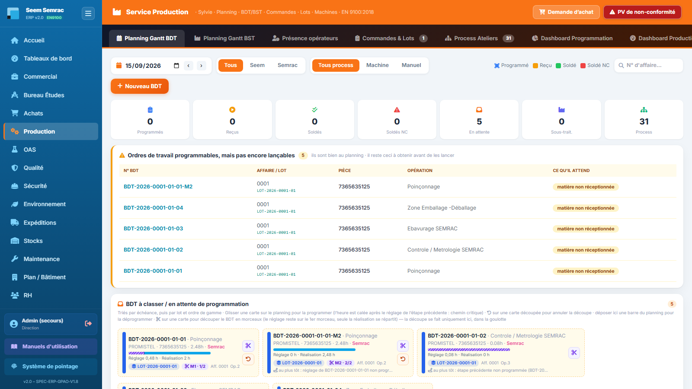
Planning Gantt BDT — la goulotte des BDT à classer au-dessus (mini-barre réglage | réalisation sur chaque carte), le Gantt par poste au-dessous ; notez le liseré de couleur « lot » et le segment de réglage hachuré en tête de chaque barre, ainsi que les sous-cases Matin / Journée / Après-midi / Soirée des postes.
Pas à pas
Programmer un BDT sur un poste :
Choisissez la date en haut à gauche (le planning affiche les BDT prévus ce jour-là).
Prenez une carte dans la goulotte « BDT à classer » et glissez-la sur la ligne du poste : un guide vertical orange indique l'heure de dépôt (arrondie au quart d'heure). Si l'étape précédente du lot impose une heure de départ, une zone rouge hachurée couvre la partie de la journée où l'on ne peut pas encore commencer, avec « au plus tôt 9h30 · après le réglage de … ». Vous pouvez aussi cliquer la carte puis cliquer le poste : le BDT garde alors son heure s'il en avait une, sinon il est posé à 6 h, l'heure où le planning l'affiche.
L'ERP vérifie qu'un process du poste est compatible (même activité Seem/Semrac que le BDT) ; sinon le dépôt est refusé avec un message. Il applique ensuite le chemin critique (détail ci-dessous) : posé trop tôt le bon jour, le BDT est calé à l'heure au plus tôt et un message orange « Calé à 9h30 (chemin critique) » le dit ; posé un jour antérieur au jour au plus tôt, il est refusé. Si c'est bon, le BDT passe programmé à la date et l'heure retenues.
Pour déplacer un BDT déjà programmé, glissez sa barre sur un autre poste ou un autre horaire. Si ce déplacement rend invalides les étapes suivantes déjà posées, un message les liste (« 1 étape suivante à revoir ») : elles ne sont jamais décalées automatiquement et apparaissent dans la carte « Enchaînements à revoir ». Pour remettre un BDT en attente : clic droit → « Déprogrammer (retour en attente) », ou glissez la barre dans la goulotte. Un BDT déjà reçu ne se déplace et ne se déprogramme plus.
Réceptionner puis solder un BDT (signature au matricule + PIN) :
Quand l'opération démarre : double-cliquez sur la barre du BDT programmé (ou clic droit → « Réceptionner (Reçu) »). La modale rappelle le BDT avec ses lignes Réglage et Réalisation, puis demande un matricule et un code PIN ; l'heure de début réelle est enregistrée et la barre passe en jaune. Peuvent recevoir : un opérateur, ou une personne qui écrit en Production (chef d'atelier). La personne qui reçoit devient celle qui réalise le bon : elle apparaît en « Reçu par » au soldage et c'est son coût horaire qui compte.
Une fois le BDT reçu, le double-clic sur sa barre ouvre la déclaration de sortie matière.
À la fin : clic droit → « Solder le BDT ». La fenêtre rappelle la durée allouée, le réglage, la réalisation et « Reçu par ». Saisissez l'heure de fin réelle, le résultat (✅ Conforme, ⚠️ Reprise partielle, ❌ Non-conformité), d'éventuelles observations, puis le matricule + code PIN de la personne qui solde. Qui peut solder (rappelé dans la fenêtre) : l'opérateur qui a reçu ce BDT, ou une personne habilitée à écrire en Production, qui peut aussi solder le bon reçu par un autre. Tout autre matricule est refusé : « Seuls l'opérateur qui a reçu ce BDT ou une personne habilitée à écrire en Production peuvent le solder. ». Le bouton « Solder » se grise pendant l'envoi ; en cas de refus, le PIN est effacé et le message s'affiche en rouge.
Si le résultat est « Non-conformité », un champ Gravité apparaît (Mineure / Majeure / Critique / Bloquante). La fiche NC part automatiquement à la Qualité ; une gravité Critique ou Bloquante bloque l'expédition de l'affaire jusqu'à traitement ou dérogation.
Le temps réel est calculé et comparé au temps alloué — il alimente le journal des temps et les indicateurs (TRS, écarts).
La matrice de compétences ne bloque plus le soldage (15/09/2026). Jusque-là, presque personne ne pouvait solder : le message « … n'est pas habilité(e) à solder … (matrice de compétences) » tombait pour tout opérateur ayant au moins une ligne dans la matrice, parce que la matrice RH enregistre l'identifiant du process alors que le contrôle le comparait au nom de l'opération ; un chef d'atelier obtenait, lui, « Matricule ou code PIN incorrect ». Désormais, si l'opérateur qui a reçu le bon n'a pas de niveau renseigné pour ce process, le soldage est enregistré et une notification orange invite à mettre la matrice à jour (RH › Compétences). Quand un chef solde le bon reçu par un opérateur, le PV d'autocontrôle porte « BDT reçu par X, soldé par Y ».
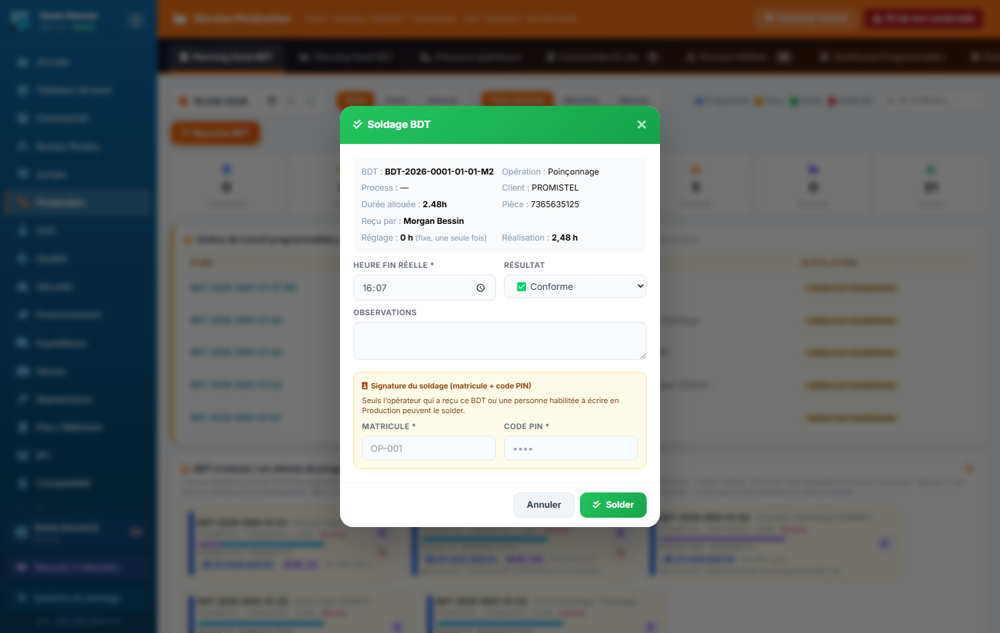
Soldage BDT — le rappel du bon (dont « Reçu par »), l'heure de fin réelle et le résultat, puis le cadre « Signature du soldage » : qui peut solder, matricule et code PIN.
Déclarer une sortie matière : double-cliquez une barre BDT → la modale « Déclaration de sortie matière » s'ouvre. Choisissez le type (Matière, Fourniture ou Consommable machine), l'article du stock, la quantité, et pour un consommable la machine ou le poste concerné (traçage OPEX). La sortie décrémente le stock et se rattache au coût du lot.
Affecter les opérateurs aux postes : dans le bloc « Affectation des ressources », glissez une carte opérateur (ou cliquez-la pour la sélectionner) puis déposez-la dans une sous-case Matin / Journée / Après-midi / Soirée d'un poste du planning. L'affectation est enregistrée et tracée pour le jour ; la croix sur l'étiquette la retire. Un opérateur peut tenir plusieurs process et créneaux.
Les opérateurs sont classés automatiquement dans la colonne correspondant à leur présence du jour (Matin, Journée, Après-midi, Soirée) — celle que vous saisissez dans l'onglet Présence opérateurs. Pour un jour dont les présences ne sont pas encore chargées (autre semaine), la liste affiche « Chargement des présences du jour… » le temps de les lire, au lieu de ranger tout le monde en « Absent ».
Un opérateur absent ou non planifié (présence non saisie) apparaît grisé dans la colonne « Absent » et n'est pas déplaçable : passez d'abord par l'onglet Présence pour le rendre affectable.
Le contrôle de compétence reste porté par le process : un BDT ne peut être programmé que sur un poste dont un process couvre son opération et son activité (Seem/Semrac).
Faire une demande d'achat depuis la Production
Bouton « Demande d'achat » du bandeau. Réservé aux personnes qui ont l'écriture sur la Production ; la demande part aux Achats (onglet Demandes d'achat, statut « à traiter ») au nom de la personne qui signe, sous la forme « Prénom Nom (Production) ».
Cliquez « Demande d'achat » : le formulaire complet s'ouvre aussitôt, curseur sur le matricule. Il n'y a plus d'étape « Identifier ».
Qui fait la demande ? — matricule et code PIN (obligatoires). Ils sont vérifiés à l'envoi.
Nature de l'achat — Matière, Accessoire ou Machine (OPEX). Pour « Machine », choisissez la machine concernée (liste groupée par poste) : le prix ira sur l'OPEX de cette machine à la réception, et le poste se remplit tout seul.
Remplissez Article / désignation et Quantité (obligatoires, virgule acceptée), puis au besoin Référence, Unité (u, kg, m, l, lot, boîte…), Affaire (ou « Sans affaire »), Poste concerné, Priorité (Normale / Urgente / Critique), Livraison souhaitée (pas dans le passé) et Fournisseur suggéré.
Cliquez « Envoyer aux Achats » : la fenêtre se ferme et une notification donne le numéro (« Demande d'achat DA-2026-012 envoyée aux Achats. »).
Message dans la fenêtre
Ce qu'il faut faire
« Matricule ou PIN incorrect. » (le PIN est effacé)
Ressaisir le PIN ; vérifier le matricule.
« Seules les personnes habilitées à écrire en Production peuvent faire une demande d'achat depuis la Production. »
Faire saisir la demande par un chef d'atelier, ou demander à la RH l'écriture sur la Production.
Un champ en rouge (quantité, machine, livraison…)
Corriger le champ signalé puis renvoyer.
« Vérification du matricule impossible … rien n'a été enregistré »
Problème de base de données passager : réessayer dans un instant.
Changement du 15/09/2026 : l'ancien formulaire ne s'affichait qu'après une identification réussie, et l'identification exigeait d'être affecté à un poste le jour même — elle refusait donc tout le monde dès que le planning du jour n'était pas saisi. Cette limite est supprimée. En contrepartie, un opérateur sans écriture Production ne peut plus faire de demande d'achat depuis la Production.
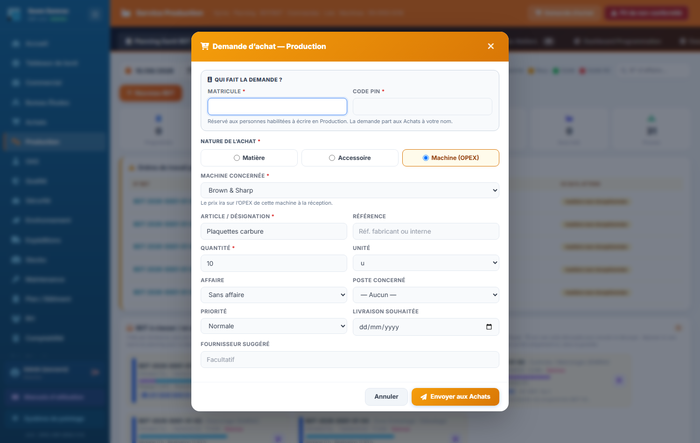
Demande d'achat — Production — « Qui fait la demande ? » (matricule + PIN), la nature de l'achat (ici Machine, avec la machine concernée), article, référence, quantité et unité, affaire, poste, priorité, livraison souhaitée et fournisseur suggéré.
Émettre un PV de non-conformité depuis la Production
Bouton rouge « PV de non-conformité », juste à côté de « Demande d'achat ». Réservé aux personnes qui ont l'écriture sur la Production. La non-conformité arrive dans Qualité › Non-Conformités (catégorie « Production », statut « Ouvert », numéro NC-2026-…), au nom de la personne qui signe. Le rattachement à une affaire est facultatif.
Cliquez « PV de non-conformité » : le formulaire s'ouvre, curseur sur le matricule.
Qui émet le PV ? — matricule et code PIN (obligatoires).
Constat — date du constat (aujourd'hui par défaut, jamais dans le futur), type de NC (Interne / Client / Fournisseur), entité (Seem / Semrac, obligatoire), gravité (Mineure / Majeure / Critique / Bloquante, Majeure par défaut).
Rattachement (facultatif) — choisissez l'affaire : les listes Lot et BDT ne proposent alors que ceux de cette affaire ; choisir un BDT complète le lot et le code article / pièce. Complétez au besoin la désignation, la quantité concernée (nombre entier de pièces) et le poste où le défaut a été détecté.
Défaut — nature de la NC, imputation (service responsable), description du défaut (obligatoire), nature de la cause, cause présumée, action immédiate, traitement proposé. Les listes sont les mêmes que dans le formulaire de la Qualité.
Au besoin, cochez « Mettre en quarantaine » pour isoler le lot ou les pièces en attendant la décision de la Qualité (il faut alors désigner un lot, un BDT, un code article ou une désignation).
Cliquez « Émettre le PV » : « PV de non-conformité NC-2026-… émis : il est dans la liste des NC de la Qualité » (et « lot mis en quarantaine » si la case était cochée).
Une gravité Critique ou Bloquante rattachée à une affaire bloque l'expédition de cette affaire tant que la Qualité n'a pas clos la NC ; une quarantaine bloque l'expédition du lot, quelle que soit la gravité.
L'ERP vérifie que le lot et le BDT appartiennent bien à l'affaire choisie ; sinon il refuse et nomme le problème (« Le lot … appartient à l'affaire …, pas à l'affaire … »).
Action immédiate « Rebut » : le rebut est aussi inscrit au registre des déchets (Sécurité). Si cela échoue, une notification orange le dit : saisissez-le dans Sécurité › Déchets.
Le nom de l'émetteur, la cause présumée et le traitement proposé sont recopiés dans la description de la NC.
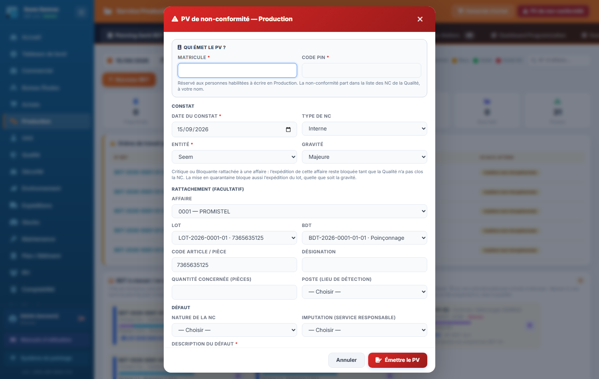
PV de non-conformité — Production — « Qui émet le PV ? », le constat (date, type, entité, gravité, avec le rappel du blocage d'expédition), le rattachement facultatif (affaire, puis lot et BDT de cette affaire, code pièce complété), puis le défaut. Plus bas : cause, action immédiate, traitement proposé et la case « Mettre en quarantaine ».
Filtres activité Seem/Semrac
Les boutons Tous / Seem / Semrac filtrent à la fois les postes du Gantt, les cartes de la goulotte et les tuiles de statistiques. Les postes « both » (Seem & Semrac) restent visibles dans les deux cas.
Filtres process machine/manuel
Les boutons Tous process / Machine / Manuel restreignent les statistiques aux process nécessitant une machine ou réalisés à la main. La recherche « N° d'affaire… » surligne en orange les BDT de l'affaire cherchée (planning + goulotte) et estompe les autres.
Se concentrer sur une étape
Un clic simple sur une barre BDT (ou la sélection d'une carte en attente) resserre le planning autour de l'étape cliquée : au lieu d'afficher tous les postes traversés par le lot, l'ERP ne garde que trois lignes au maximum — le poste de l'étape précédente, celui de l'étape cliquée et celui de l'étape suivante de la gamme. Vous voyez ainsi « d'où arrive » et « où repart » la pièce, sans le bruit du reste de l'atelier.
Cliquez une barre BDT du Gantt (ou une carte de la goulotte) : les lignes de postes sans rapport avec l'étape disparaissent.
Un bandeau violet « Focus étape » s'affiche au-dessus du planning et résume la position dans la gamme, par exemple : LOT-2026-0042 · etape 2/4 — Pliage (avant : Poinçonnage · apres : ST Aalberts). Si le lot ne comporte qu'une opération, le bandeau indique « seule etape ». Les morceaux d'un BDT découpé comptent pour une seule étape, et le bandeau ajoute l'au plus tôt de l'étape (« · au plus tôt : 15/09 8h30 (après le réglage de …) »).
Pour revenir à la vue complète : bouton « Tout afficher » du bandeau, ou re-cliquez la même barre. Cliquer une autre barre déplace simplement le focus sur cette nouvelle étape.
Le focus se libère aussi automatiquement dès que vous programmez le BDT sélectionné.
Bon à savoir — les étapes sous-traitées : la gamme d'un lot mélange des opérations faites à l'atelier (BDT) et des opérations confiées à un prestataire (BST/BDS). Si l'étape d'avant ou d'après est sous-traitée, elle est nommée dans le bandeau sous la forme « ST <nom du sous-traitant> » — mais elle n'ajoute évidemment aucune ligne au planning des postes, puisqu'elle ne se fait pas dans l'atelier. Le comptage des étapes (« etape 2/4 ») tient bien compte des deux, internes et sous-traitées.
Chemin critique : l'étape suivante démarre après le réglage de la précédente
Deux étapes qui se suivent dans la gamme d'un lot peuvent se chevaucher, mais l'étape d'après ne peut commencer qu'une fois le réglage de l'étape d'avant terminé. L'ERP calcule pour chaque étape son au plus tôt — un jour et une heure — et l'applique quand vous posez un BDT ou planifiez un BST. Programmer n'est pas produire : rien n'est retiré du planning et rien n'est jamais décalé tout seul.
Situation
Au plus tôt de l'étape suivante
Étape précédente posée, avec un réglage
Début de l'étape précédente + son réglage. Exemple : posée à 8 h avec 0,5 h de réglage → au plus tôt 8h30.
Étape précédente sans réglage, ou réglage non renseigné
Son début (le réglage inconnu compte pour 0, et c'est dit).
Étape précédente découpée
Le morceau qui porte le réglage fait foi. S'il est encore dans la goulotte, l'étape suivante ne démarre pas avant le début du plus tôt des morceaux déjà posés.
Étape précédente posée sans heure (posée au clic)
Comptée à 6 h, l'heure où le planning l'affiche.
Étape précédente déjà reçue
Son heure de début réelle.
Étape précédente soldée, ou dans la goulotte
Aucune contrainte (la goulotte donne une simple information « étape précédente non programmée »).
Passage à l'OAS entre les deux, ou étape suivante sous-traitée
La fin complète de l'étape précédente (un lot passe entier à l'OAS, un carton ne part pas à moitié).
Étape précédente sous-traitée
Le jour de retour (retour effectif, sinon date d'envoi + durée), à 5 h.
Morceaux d'une même étape
Un morceau sans réglage démarre après le réglage du morceau qui le porte.
Le planning compte en heures de grille, de 5 h à 23 h : un réglage qui dépasse 23 h reprend le lendemain à 5 h. Les week-ends ne sont pas exclus.
Posé trop tôt le bon jour : le BDT est calé à l'au plus tôt. Posé un jour avant : refus « Au plus tôt le 15/09 à 8h30 (après le réglage de …) : posez … ce jour-là ou après. »
La barre de réglage hachurée et son trait de fin servent de repère : l'étape suivante se place après ce trait.
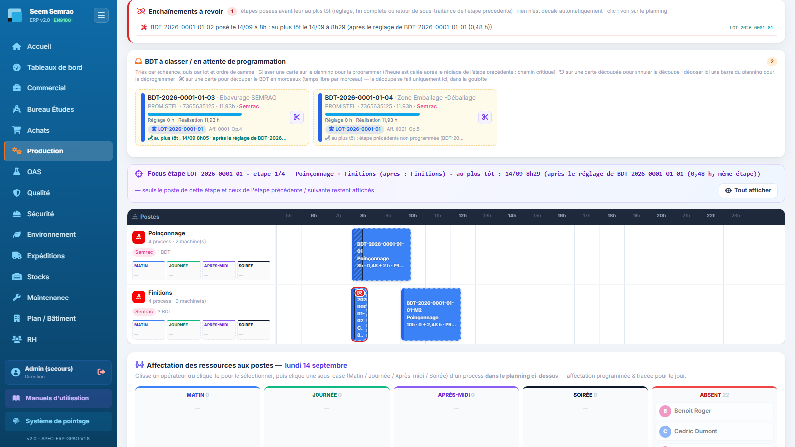
Chemin critique — en haut, la carte « Enchaînements à revoir » : BDT-…-01-02 est posé à 8 h alors que le réglage de l'étape précédente (0,48 h, commencé à 8 h) finit à 8h29. Sur les cartes de la goulotte, la ligne « au plus tôt ». Dans le Gantt, le segment hachuré en tête de la barre BDT-…-01-01 est son réglage, et la pastille rouge signale la barre à revoir.
Découper un BDT en plusieurs morceaux
Un BDT peut être découpé en plusieurs morceaux, pour réaliser l'opération en plusieurs fois (plusieurs créneaux, jours ou postes). La découpe se fait uniquement dans la goulotte, avec le bouton ciseaux de la carte du BDT : il n'y a pas de découpe depuis le planning. Seul le temps de réalisation se découpe : le réglage est fixe, fait une seule fois, et il reste sur le morceau 1.
Dans la goulotte « BDT à classer », cliquez le bouton ciseaux de la carte. La fenêtre rappelle le BDT (numéro, opération, pièce) et décompose sa durée : « Durée 4 h = Réglage 0,5 h (fixe, une seule fois, reste sur le morceau 1) + Réalisation 3,5 h ». Si le BDT fait déjà partie d'une découpe, un bandeau jaune le rappelle.
Le champ Réglage est :
verrouillé quand le réglage est connu (enregistré sur le BDT, ou retrouvé sans ambiguïté dans la gamme), ou quand il est déjà porté par un autre morceau (le champ vaut alors 0) ;
saisissable quand il est inconnu, sur le BDT d'origine seulement : vide = tout le temps est traité en réalisation. Si la gamme donne une valeur sans certitude, un bouton « Utiliser 0,48 h » la recopie — elle n'est jamais saisie à votre place ;
le réglage ne peut pas dépasser la durée du BDT.
Si la lecture du réglage échoue (réseau), « Découper » reste grisé : cliquez « Relire le réglage », ou saisissez-le vous-même.
La jauge montre tout le temps de réalisation à répartir (« Temps de réalisation à répartir : 3,5 h ») :
un segment de couleur par morceau, numéroté, dont la longueur est proportionnelle au temps qui lui est alloué ;
la partie encore libre en gris : « reste à répartir 0,75 h » ;
un dépassement en orange rayé, avec un repère « ▲ prévu 3,5 h » : « +0,5 h au-delà du temps prévu » ; quand tout est alloué, la jauge affiche « tout le temps est réparti » (vert) ;
le réglage est affiché à part, dans un bloc gris hachuré avec un cadenas (« Réglage 0,5 h · morceau 1 ») : il est fixe et ne se déplace pas.
La jauge reste visible en haut de la fenêtre quand on fait défiler une longue liste de morceaux. Un BDT sans temps de réalisation affiche « aucun temps de réalisation à répartir » (les curseurs vont alors de 0 à 8 h, saisie libre).
Chaque morceau a sa ligne, de la même couleur que son segment : un curseur qui va de 0 à la totalité du temps de réalisation, un champ en heures pour saisir une valeur exacte au centième (le curseur suit), et la part en % du temps à répartir. Deux morceaux sont proposés à l'ouverture, chacun à la moitié de la réalisation (le 2ᵉ prend le reste de l'arrondi).
À la souris : glissez le curseur ; il avance par quart d'heure et s'arrête de lui-même sur la valeur qui complète exactement le temps prévu. La jauge se met à jour pendant le glissement. Rien ne bloque : on peut dépasser le temps prévu, la jauge et le pied de la fenêtre l'indiquent.
Au clavier (curseur sélectionné) : flèches ← → (ou ↑ ↓) = ± 0,25 h, Page préc. / Page suiv. = ± 1 h, Début = 0, Fin = tout le temps.
Le morceau 1 rappelle qu'il porte aussi le réglage (« soit 2,25 h au total ») ; il peut ne porter que le réglage (réalisation 0). Les autres morceaux doivent recevoir du temps : un morceau à 0 est signalé en orange.
Aides : « Répartir également » partage le temps de réalisation en parts égales au centième (le dernier morceau prend le reste de l'arrondi) ; « Mettre le reste sur le dernier morceau » donne au dernier morceau exactement ce qui complète le temps prévu (il est réduit s'il y a dépassement). « + Ajouter un morceau » ajoute une ligne (12 morceaux au maximum), qui reçoit le reste à répartir s'il y en a ; la corbeille retire une ligne (il en faut au moins 2). Ajouter ou retirer une ligne ne touche pas aux temps des autres morceaux.
Le pied de la fenêtre affiche la réalisation répartie sur le temps prévu (« Réalisation répartie : 3,25 h sur 3,5 h (reste 0,25 h à répartir) ») et le temps alloué total (réglage + réalisation).
Cliquez « Découper » (actif dès que chaque morceau a du temps, sauf le morceau 1 qui peut ne porter que le réglage). Si le temps réparti est égal au temps prévu, la découpe part directement ; sinon une confirmation le signale : « Le temps réparti (3,75 h) diffère du temps de réalisation prévu (3,5 h) : découper quand même ? » — « Découper quand même » applique les temps tels qu'alloués. Le BDT d'origine devient le premier morceau, garde son numéro et le réglage ; les suivants sont créés avec les suffixes -M2, -M3… (réglage 0). Chaque morceau reste dans la goulotte : programmez-les ensuite séparément.
Un BDT déjà posé sur le planning ne se découpe pas. Remettez-le d'abord dans la goulotte (clic droit sur sa barre → « Déprogrammer », ou glissez la barre dans la goulotte), puis découpez-le. Un BDT reçu, soldé, annulé ou sous-traité ne se découpe pas non plus. Les morceaux gardent le rattachement du BDT d'origine (affaire, lot, commande, étape de gamme). Si le BDT a changé depuis l'ouverture de la fenêtre (découpé depuis un autre écran, durée modifiée), la découpe est refusée avec « Page périmée » : rechargez le planning.
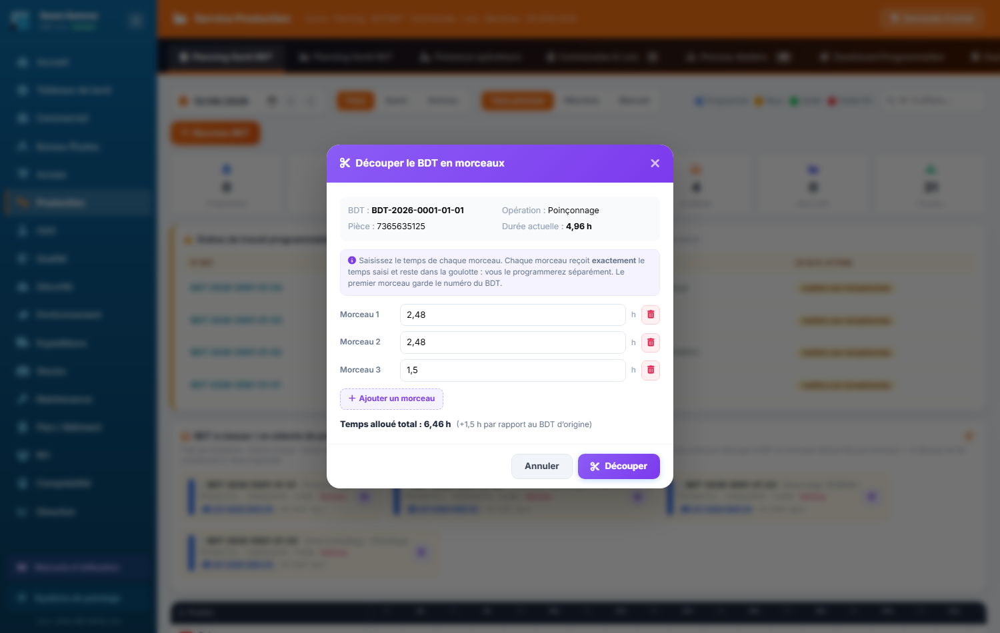
Découper le BDT en morceaux — la durée décomposée en réglage + réalisation, le champ Réglage (verrouillé ou saisissable), la jauge du temps de réalisation à répartir (un segment coloré par morceau, reste en gris, réglage hachuré à part), un curseur par morceau avec sa valeur en heures, sa part en % et sa corbeille, puis la réalisation répartie et le temps alloué total.
Annuler une découpe
Tant qu'aucun morceau n'a commencé, une découpe se défait : bouton « Annuler la découpe » (flèche de retour orange) sur la carte de n'importe quel morceau, dans la goulotte.
Cliquez le bouton : une confirmation liste les morceaux (durée, réglage, statut).
Confirmez « Recoller les morceaux » : les morceaux -M2, -M3… sont supprimés et le BDT d'origine retrouve sa durée d'avant la découpe (ou, pour une découpe ancienne dont elle n'a pas été gardée, la somme des morceaux), avec son réglage compté une seule fois.
Refusé si un morceau est posé sur le planning (« M3 posé le 15/09 : déprogrammez-le »), reçu ou soldé (« M2 déjà reçu : découpe définitive »), affecté à un opérateur, sous-traité, annulé, ou s'il a déjà servi (historique opérateur ou machine, non-conformité, sortie de stock, relevé de cotes). Si un morceau est modifié pendant l'opération, il reste en place et le BDT d'origine est réduit d'autant (« recollage partiel »). En cas de coupure réseau au milieu, relancez simplement « Annuler la découpe » : l'opération reprend sans rien compter deux fois.
Formulaire « Créer / Affecter un BDT »
Le bouton « Nouveau BDT » ouvre la modale de création (pour un travail ponctuel hors cascade commande → lots) :
Champ
Saisie
Obligatoire
Explication
N° Commande
Texte (CMD-2026-XXXX)
Oui
Commande / affaire de rattachement.
Client
Texte
Oui
Raison sociale du client final.
Activité
Liste : Seem / Semrac
Oui
Site concerné — conditionne la liste des opérations.
Opération
Liste (selon l'activité)
Oui
Opération de fabrication (Usinage CN, Pliage, Soudure…).
Pièce
Texte
Oui
Référence de la pièce fabriquée.
Durée (h)
Nombre (pas 0,5)
Oui
Temps alloué à l'opération, réglage compris.
dont réglage (h)
Nombre (pas 0,05)
Non
Part de la durée consacrée au réglage (fixe, fait une seule fois ; il reste sur le morceau 1 en cas de découpe). Vide = réglage inconnu. Ne peut pas dépasser la durée.
Heure début
Heure (défaut 06:00)
Non
Position initiale de la barre sur le Gantt.
Priorité
Normal / Urgent / Critique
Non
Colore la carte en attente (vert / orange / rouge).
Process atelier
Liste des process compatibles
Non
Laisser vide = le BDT reste en attente dans la goulotte.
Règles & points d'attention
Matière et préparation technique : un BDT dont la matière n'est pas réceptionnée ou dont la préparation technique n'est pas terminée reste programmable ; il est seulement signalé dans la carte « Ordres de travail programmables, mais pas encore lançables » (voir en tête de section).
Les process de traitement de surface (OAS, oxydation, Surtec…) n'apparaissent jamais dans ce planning : ils se pilotent dans le service OAS.
La goulotte trie par échéance client, puis par lot et rang dans la gamme : traitez-la de haut en bas. Ce tri n'est pas le chemin critique — celui-ci est contrôlé à la pose de chaque BDT.
Le jour et l'heure d'un BDT ne se posent que par le planning (glisser-déposer ou clic) : c'est là que s'applique le chemin critique.
Pendant un glisser, tous les BDT du même lot sont surlignés en jaune — pratique pour repérer l'opération précédente.
Clic droit sur une barre : le menu propose aussi « Aller à la commande rattachée » et « Aller au lot rattaché ». Double-clic sur une carte en attente : ouvre la commande mère.
Attention : réceptionner et solder exigent un matricule + code PIN — c'est la signature de traçabilité (EN 9100). Reçoit un opérateur ou une personne qui écrit en Production ; solde l'opérateur qui a reçu le bon ou une personne qui écrit en Production. Le compte de secours ne peut pas signer. Un BDT soldé ne peut plus être déplacé ni découpé ; un BDT posé sur le planning ne se découpe pas (remettez-le d'abord dans la goulotte) ; une NC Critique/Bloquante bloque l'expédition de toute l'affaire.
Astuce : le survol d'une barre affiche une infobulle complète (client, pièce, durée, réglage et réalisation, morceau « M2 · 2/3 », au plus tôt et, le cas échéant, l'enchaînement à revoir, process, statut). Rappel des gestes : clic = focus étape (3 lignes max) · double-clic = sortie matière · clic droit = statuts et navigation.
2
Planning Gantt BST (sous-traitance)
À quoi ça sert. Les opérations confiées à un prestataire extérieur (oxydation, zingage, peinture poudre, traitement thermique…) sont portées par des BST (bons de sous-traitance). Cet onglet les planifie sur une grille jour par jour : quel sous-traitant, quel jour d'envoi, quelle durée — et suit leur retour. L'affectation d'un BST crée automatiquement le bon de commande sous-traitant côté Expéditions.
Ce que vous voyez
Barre d'outils : date de début de la fenêtre avec navigation ±7 jours (‹ ›) et ±1 jour (−1j / +1j), rappel « Vue 21 jours · BST de 1 à 20+ jours · couleur = lot », légende des statuts et bouton violet « Nouveau BST ».
5 tuiles KPI : BST total, À planifier, En attente d'envoi, Envoyés (chez ST), Revenus.
La grille : lignes = sous-traitants (nom, localisation, qualification, pastilles des prestations maîtrisées, OTD en % coloré vert ≥ 90, orange ≥ 75, rouge en dessous) ; colonnes = 21 jours (week-ends grisés, aujourd'hui surligné orange). Chaque barre BST porte la couleur de son lot (la même que sur le Gantt BDT) et son statut en contour : en attente d'envoi (pointillé orange), envoyé (contour bleu), revenu (contour vert).
« BST à planifier »au-dessus de la grille (comme la goulotte des BDT sur le Gantt d'atelier) : les cartes sans date ni sous-traitant, chacune avec « Dispo le 17/09 » quand l'étape précédente du lot fixe un jour au plus tôt (fin complète de l'étape d'atelier, ou retour d'une autre sous-traitance). Glissez-en une sur la case d'un jour, sur la ligne du sous-traitant, pour la planifier.
Une barre BST planifiée avant son jour au plus tôt est entourée de rouge ; le motif s'affiche dans son infobulle et dans la carte « Enchaînements à revoir » du planning BDT.
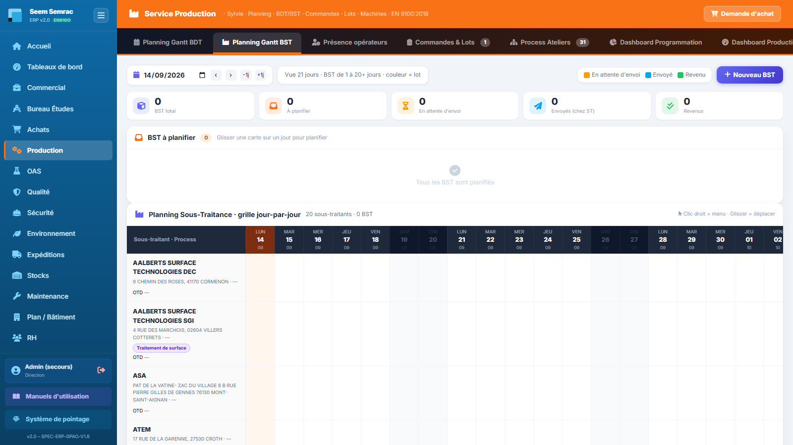
Planning Gantt BST — le bac « BST à planifier » au-dessus, puis la grille 21 jours par sous-traitant (avec OTD et prestations) et les barres colorées par lot. Sur cet exemple, l'étape d'atelier précédente du lot est programmée le lendemain : la carte à planifier annonce « Dispo le 15/09 », et le BST déjà posé le 14/09 est entouré de rouge (planifié avant son au plus tôt).
Pas à pas
Planifier un BST :
Prenez une carte dans « BST à planifier » (ou cliquez-la pour la sélectionner) et déposez-la sur la case du jour d'envoi, sur la ligne du sous-traitant choisi. Un jour antérieur au « Dispo le … » est refusé (« … dispo au plus tôt le 17/09 (après la fin de …) ») et aucun BC n'est créé.
Le BST passe en attente d'envoi et l'ERP crée automatiquement le BC sous-traitant lié — il apparaît dans Expéditions → Bons de Commande, prêt à être envoyé.
Ensuite, le statut du BST est piloté par ce BC : BC envoyé/accusé → le BST passe « envoyé » ; BC reçu → « revenu ». On ne change donc pas le statut depuis le planning, mais depuis le BC en Expéditions.
Pour déplacer un BST, glissez sa barre sur une autre case. Clic droit → « Déplanifier (retour à l'attente) » pour le remettre dans le bac.
Créer un BST (modale « Nouveau BST ») :
Champ
Saisie
Obligatoire
Explication
Lot lié
Liste des lots
Oui
Le lot dont l'opération part en sous-traitance.
Sous-traitant
Liste des sous-traitants
Oui
Prestataire pressenti.
Opération ST
Liste (oxydation, zingage, sérigraphie…)
Non
Prestation demandée.
Qté
Nombre
Non
Par défaut, la quantité du lot.
Date envoi
Date
Non
Jour de départ prévu chez le prestataire.
Durée (jours)
Nombre 1–60 (défaut 5)
Non
Longueur de la barre sur la grille.
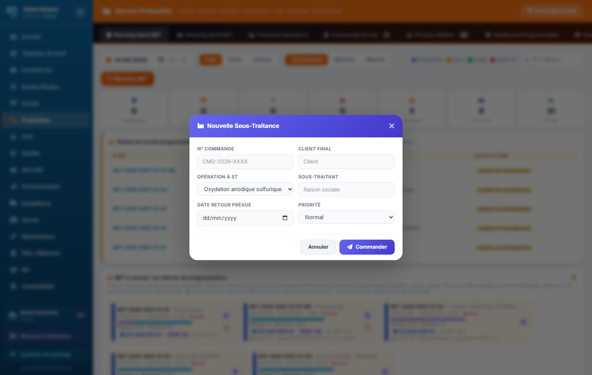
Nouvelle sous-traitance — le formulaire d'envoi d'une opération chez un prestataire (commande, client final, opération, sous-traitant, date de retour, priorité).
Se concentrer sur une étape
Comme sur le Gantt BDT, un clic simple sur une barre BST (ou sur une carte à planifier) resserre la grille autour de l'étape cliquée : ne restent que les lignes des sous-traitants de l'étape précédente, de l'étape cliquée et de l'étape suivante de la gamme. Le bandeau violet « Focus étape » rappelle la position dans la gamme (« … · etape 3/5 — Zingage (avant : atelier Pliage · apres : Peinture poudre) »).
Si l'étape voisine est réalisée à l'atelier (et non chez un prestataire), le bandeau la nomme « atelier <opération> » : elle n'ajoute aucune ligne à cette grille, qui ne liste que des sous-traitants.
Pour sortir du focus : bouton « Tout afficher » du bandeau, ou nouveau clic sur la même barre.
Règles & points d'attention
La couleur d'une barre = son lot, partagée entre les plannings BDT et BST : un même lot garde sa couleur partout.
Le clic droit propose aussi la navigation : Ouvrir la commande, Ouvrir le lot, Ouvrir le BC sous-traitant (s'il existe). Double-clic sur une barre : ouvre la commande mère.
L'OTD affiché sur chaque ligne aide à choisir le prestataire le plus fiable en délai.
Bon à savoir : le passage « envoyé » / « revenu » se fait dans Expéditions (envoi du BC, réception du BL) — le planning reflète l'état du BC lié en temps réel.
3
Présence opérateurs
À quoi ça sert. On y programme les horaires des opérateurs Seem et Semrac, semaine par semaine, sur quatre créneaux — Matin, Journée, Après-midi, Soirée — ou « Absent ». Cette présence pilote directement la disponibilité dans le bloc « Affectation des ressources aux postes » du planning — un opérateur non programmé n'est pas affectable. L'onglet traite aussi les demandes de congés des opérateurs.
Ce que vous voyez
Deux vues, commutées par les deux boutons du haut :
Planning de présence : une grille opérateurs × 7 jours de la semaine, avec navigation ‹ › entre semaines et filtres Tous / Seem / Semrac. Chaque cellule est colorée : Matin (6h-14h), Journée (7h-17h), Après-midi (14h-22h), Soirée (22h-6h), Absent (rouge), Non programmé (gris). À côté des flèches, une roue de chargement indique qu'une semaine est en cours de lecture, et un bouton « Réessayer » apparaît si la lecture a échoué.
Demandes de congés à traiter : la liste des demandes des opérateurs (type, dates, heures/jours, motif) avec les boutons Approuver et refuser (✕).
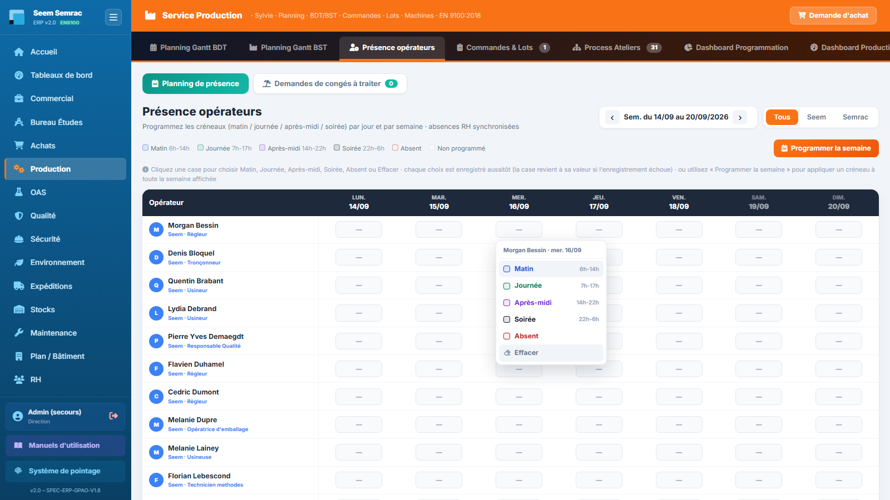
Présence opérateurs — la grille hebdomadaire : un clic sur une case ouvre le menu des créneaux ; les cases verrouillées (cadenas) sont des absences RH.
Pas à pas
Programmer un jour : cliquez la cellule de l'opérateur — un petit menu s'ouvre : Matin · Journée · Après-midi · Soirée · Absent · Effacer (le créneau en place est coché). Choisissez : la case change tout de suite et un seul enregistrement part. S'il échoue, la case revient à la dernière valeur enregistrée et un message rouge donne la raison. « Effacer » vide vraiment la case (« Non programmé »).
Au clavier : Entrée sur une case ouvre le menu, flèches haut/bas pour choisir, Entrée pour valider, Échap (ou Tab) pour refermer — le curseur revient sur la case.
Changer de semaine : ‹ › relit les présences de la semaine affichée. Tant qu'une semaine n'a jamais été lue, ses cases sont verrouillées (« … » pendant la lecture, « ? » si elle a échoué) : on ne peut pas écraser une présence qu'on ne voit pas. Une semaine déjà lue reste modifiable même si une relecture échoue.
Programmer une semaine entière : bouton orange « Programmer la semaine » → choisissez le créneau à appliquer (ou « Effacer »), les jours (Lun → Ven ou Lun → Dim), cochez les opérateurs (boutons rapides : Tout cocher / Seem / Semrac) puis « Appliquer à la semaine ». Les jours en absence RH ne sont pas touchés. Le message final compte les cases enregistrées et, s'il y en a, les échecs (ces cases reviennent à leur valeur).
Traiter un congé : vue « Demandes de congés » → Approuver pose l'absence sur le planning de présence, renvoie au pool les BDT de l'opérateur sur la période et décompte les heures du solde de congés ; ✕ refuse la demande. Les deux boutons se grisent pendant l'enregistrement. Si un de ces effets n'a pas pu se faire (solde non décompté, BDT non renvoyés…), un message orange le dit.
Règles & points d'attention
Les absences RH (congés validés, maladie) arrivent automatiquement et sont verrouillées ici (icône cadenas) — elles se gèrent côté RH.
La Production ne traite que les congés des opérateurs ; les autres demandes restent à la RH ou à la Direction. Personne ne valide son propre congé : un chef d'équipe qui a les droits de Production voit sa propre demande refusée (« Un congé ne se valide pas soi-même »). Un congé déjà traité (double clic, autre écran) est refusé sans rien décompter une seconde fois.
La présence saisie ici détermine la colonne (Matin / Journée / Après-midi / Soirée) des opérateurs dans le bloc « Affectation des ressources aux postes » du planning (section 1), et le calcul de capacité du Dashboard Programmation.
La Soirée garde ses horaires de nuit (22h-6h) ; le planning, qui va de 5 h à 23 h, n'en montre que le début.
Astuce : programmez la semaine type en une fois avec « Programmer la semaine », puis corrigez les exceptions cellule par cellule.
4
Commandes & Lots
À quoi ça sert. La vue d'ensemble du carnet de fabrication : toutes les commandes en cours et leur avancement, et tous les lots avec leur progression opération par opération. C'est le point d'entrée vers les fiches détaillées (commande → lots → BDT/BDS) et l'ordre de fabrication.
Ce que vous voyez
Deux sous-vues commutées par les boutons Commandes et Lots (avec leur compteur) :
Commandes en cours — colonnes : N° CMD / Affaire, Client, Pièces, Montant, Date cmd, Livraison, Statut (badge Retard si la date est dépassée), Avancement BDT (barre de progression % = BDT soldés / total) et ST (badge si la commande passe en sous-traitance).
Lots en cours — colonnes : Réf. Lot, Client, Pièce, Qté, Début, Fin, Statut, Avancement (opérations soldées — BDT usine + BDS revenus — sur le total, ex. « 3/5 »), Commande (lien direct).
Au-dessus de chaque tableau : une recherche avec choix du champ (N° affaire, client, statut… ). Un clic sur une ligne ouvre la fiche détaillée.
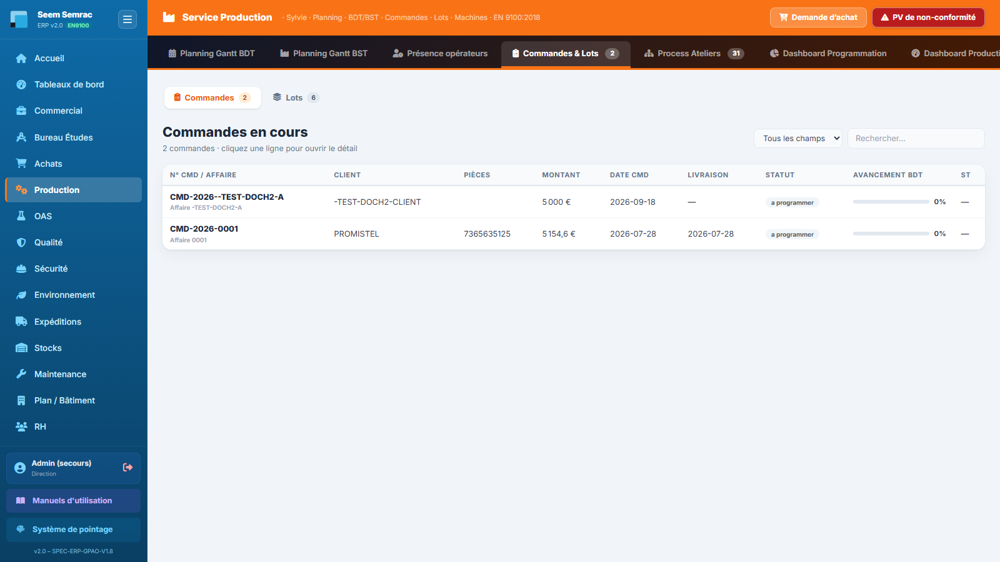
Commandes & Lots — le tableau des commandes avec la barre d'avancement BDT ; le bouton « Lots » bascule sur la vue par lot.
Pas à pas
Recherchez la commande (choisissez le champ, tapez le texte) puis cliquez la ligne : la fiche commande liste tous ses lots, chacun découpé en opérations ordonnées (badge BDT pour l'usine, BDS pour la sous-traitance) avec leur statut, plus des cartes KPI d'avancement.
Depuis la vue Lots, cliquez un lot pour ouvrir sa fiche : les étapes de production dans l'ordre, et l'impression de l'ordre de fabrication (OF) à joindre au dossier atelier.
Depuis un BDT du planning, le clic droit « Aller à la commande / au lot rattaché » mène aux mêmes fiches.
Règles & points d'attention
L'avancement d'un lot compte les BDT soldés et les BDS revenus — un BST encore chez le prestataire ne compte pas.
Une commande passe automatiquement à 100 % quand toutes ses opérations sont soldées ; son coût réel est consolidé au soldage.
Astuce : depuis la fiche d'un lot, vous pouvez rejoindre le planning avec le BDT déjà surligné (lien « planning » avec focus).
5
Process Ateliers (machines + postes & process)
À quoi ça sert. C'est le référentiel de l'atelier : les postes de travail regroupent machines et process ; le planning est organisé sur ces postes. C'est aussi le seul endroit où se saisit un coût horaire : chaque process machine porte son taux horaire machine, qui sert au calcul du coût de revient des pièces (CRU). On y crée et gère postes, process et machines, on y suit l'OPEX réel, et on y déclare une panne machine.
Ce que vous voyez
4 tuiles KPI : Machines actives, En maintenance, Arrêtées, OPEX réel conso. (YTD) (consommables sortis sur les machines depuis le 1er janvier).
Sous le titre, un badge orange N process machine : taux à saisir tant que des process machine actifs n'ont pas de taux.
Deux volets commutés par les boutons « Postes & Process » (par défaut) et « Machines ».
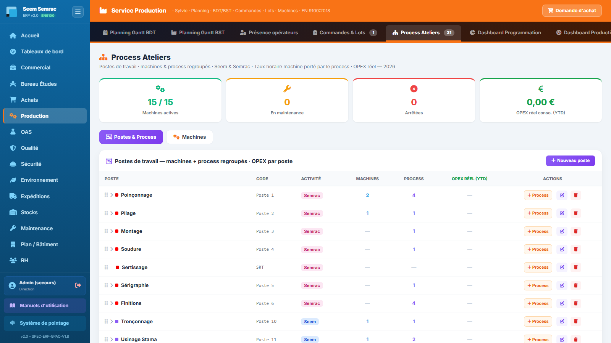
Process Ateliers — les tuiles KPI du parc et la bascule entre les volets « Postes & Process » et « Machines ».
Volet « Postes & Process »
Le tableau des postes de travail — colonnes : Poste (avec sa pastille couleur et une flèche pour déplier ses process et machines), Code, Activité (Seem / Semrac / both / OAS), Machines, Process, OPEX réel (YTD) et Actions. Les lignes se réordonnent par glisser-déposer (l'ordre est celui du planning). Boutons d'action par poste : + Process (créer un process directement dans le poste), crayon (modifier), corbeille (supprimer). Le bouton « Nouveau poste » ouvre la modale : Nom*, Code, Activité, Couleur (planning), Ordre d'affichage.
Dépliez un poste (flèche) : chaque process affiche son type et une pastille de coût — X €/h (taux horaire machine saisi), taux à saisir (process machine sans taux), coût RH (process manuel : le temps est valorisé au coût chargé des opérateurs). Le crayon du process ouvre sa fiche.
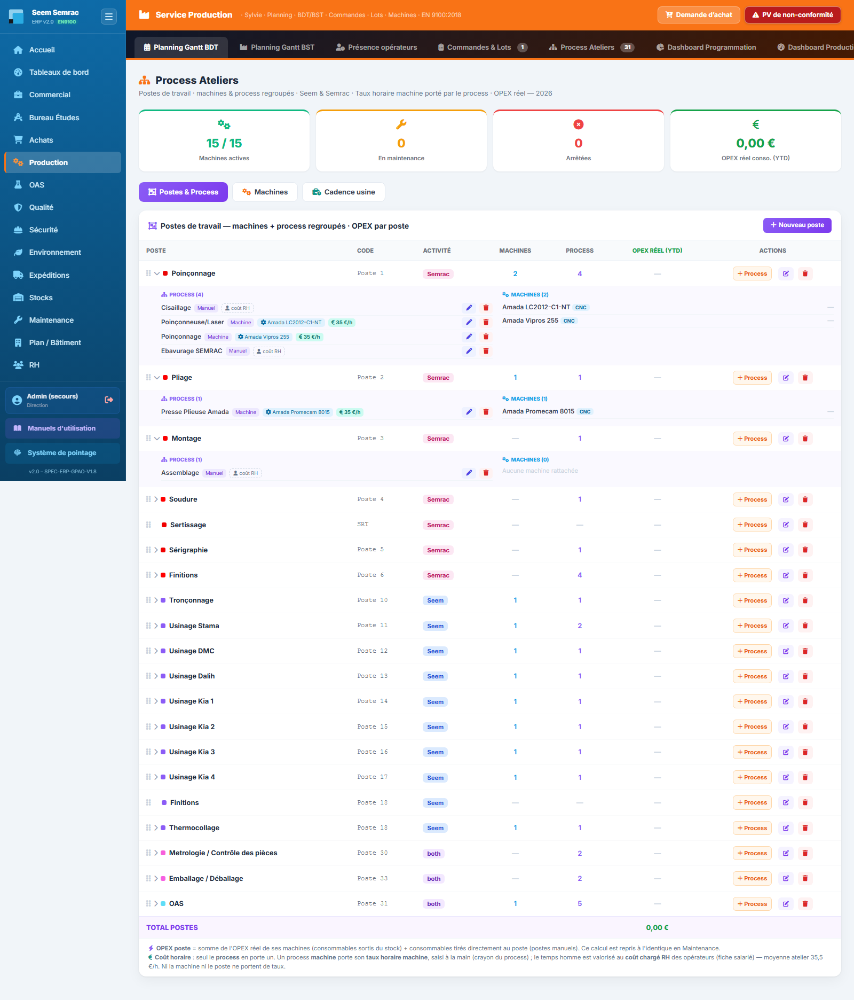
Postes de travail — trois postes dépliés : chaque process machine montre son taux horaire (« 35 €/h »), chaque process manuel la mention « coût RH ». Ni le poste ni la machine ne portent de taux.
Modales « Nouveau process » et « Modifier le process »
Champ
Saisie
Obligatoire
Explication
Nom du process
Texte
Oui
Ex. « Tournage CNC », « Ébavurage ».
Type
Machine / Manuel / OAS
Oui
Machine : le process occupe une machine et porte un taux horaire machine. Manuel : travail à la main, pas de taux (le temps est valorisé au coût chargé RH). OAS : traitement de surface, chiffré au prix, jamais au temps. Le type se choisit aussi à la modification : il ne dépend plus de la machine choisie.
Machine rattachée
Liste des machines
Non
Visible pour un process machine. Un process machine sans machine reste « Machine » et garde son taux.
Taux horaire machine (€/h HT)
Nombre ≥ 0
Non
Visible et actif pour un process machine seulement. Il valorise les heures machine de ce process : réglage machine et temps machine variable. Vide = « taux à saisir » : le temps machine compte 0 € et le coût est signalé incomplet. Saisi à la main — il ne se calcule pas.
Note « coût chargé RH »
Affichage
—
Pour un process manuel : rappelle que le temps homme est valorisé au coût chargé RH de l'opérateur (fiche salarié) et affiche la moyenne du site ou de l'atelier (ex. « moyenne atelier Seem 35,25 €/h »), ou « coût chargé RH à renseigner ».
Code · Catégorie · Ordre d'affichage
Texte / nombre
Non
À la création seulement. L'Activité (Seem / Semrac / Seem & Semrac) est obligatoire à la création.
Poste de travail
Liste des postes
Non
Le poste où le process est planifié (ses BDT s'y placent).
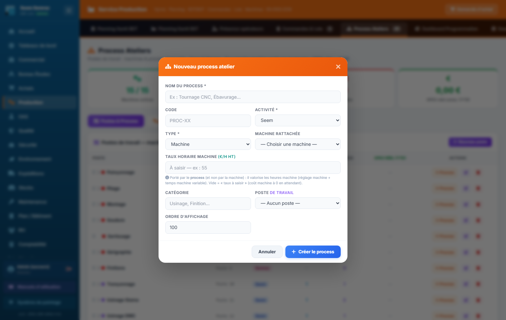
Nouveau process — type « Machine » par défaut : machine rattachée et taux horaire machine (vide = « taux à saisir »).
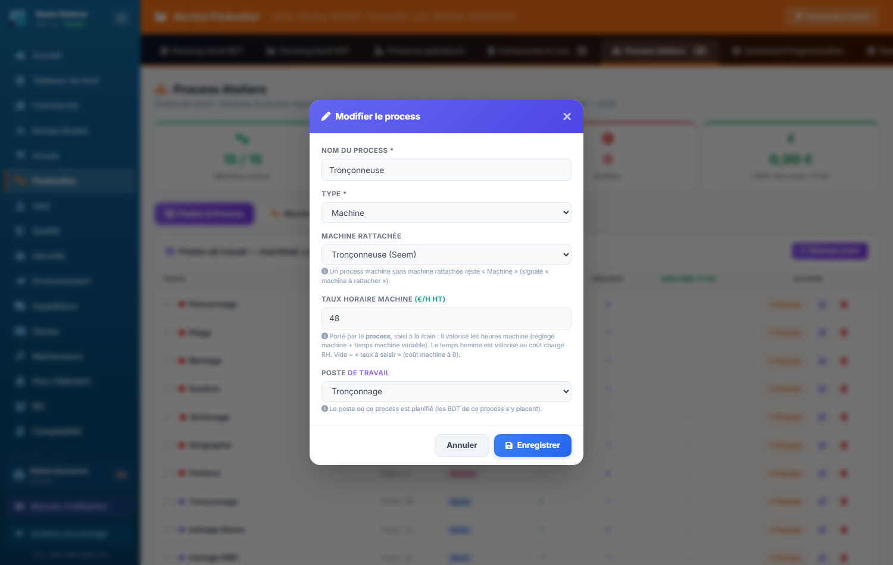
Modifier le process — type, machine rattachée et taux horaire machine du process ; en choisissant « Manuel », le taux se grise et la note « coût chargé RH » apparaît.
Volet « Machines »
Le parc machines — colonnes : Machine, Code, Activité (filtres Tous / SEEM / SEMRAC / OAS), Catégorie, Capa./j, OPEX réel conso. (YTD), Postes (bouton ouvrant le détail des postes de dépenses consommables), Statut (✔ Opérationnel / ⚙ Maintenance / ✖ Arrêt) et Actions : « Panne » (déclare la machine en panne → service Maintenance) ou « Réparée » (remise en service), modifier, supprimer. Une machine ne porte plus de taux horaire : il se saisit sur ses process.
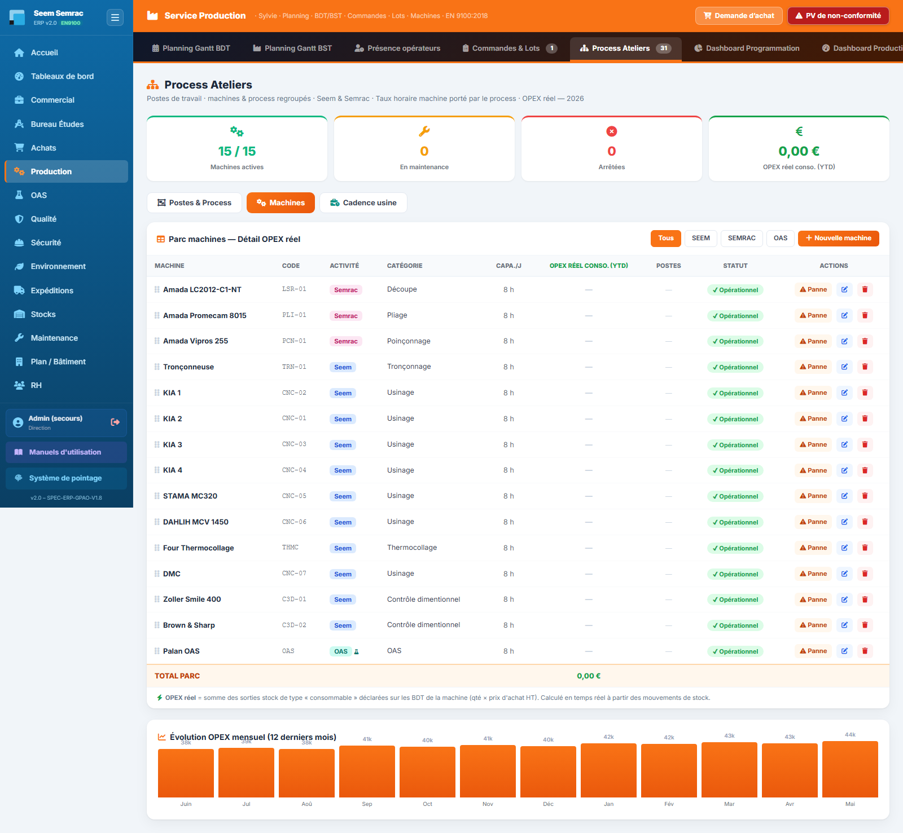
Volet Machines — plus de colonne « Taux/h » ni d'OPEX théorique : seul l'OPEX réel des consommables est suivi, en euros.
Modale « Nouvelle machine » (bouton orange), champ par champ :
Champ
Saisie
Obligatoire
Explication
Nom de la machine
Texte
Oui
Ex. « Tour CNC Mazak QT-200 ».
Code
Texte
Non
Code court (CNC-03…).
Activité
Seem / Semrac / both / OAS
Oui
Une machine OAS est hors planning (traitement de surface).
Catégorie
Texte
Non
Usinage, Découpe…
Capacité (h/jour)
Nombre (défaut 8)
Non
Heures disponibles par jour : sert au calcul d'utilisation (charge / capacité).
Tolérance ± (mm)
Nombre
Non
Sert aux études de capabilité (Qualité).
Statut
Opérationnel / Maintenance / Arrêt
Non
État courant de la machine.
Poste de travail
Liste des postes
Non
Poste de rattachement (planning + OPEX réel du poste).
Machine CNC
Case à cocher
Non
Une CNC porte des codes programme (saisis en préparation technique).
Opérations possibles
Texte (séparées par virgule)
Non
Opérations que la machine sait réaliser.
Process rattachés
Cases (process du poste)
Non
Process alimentés par cette machine ; option « Créer aussi un nouveau process » au nom de la machine.
Taux horaire machine du nouveau process (€/h HT)
Nombre ≥ 0
Non
Apparaît quand « Créer aussi un nouveau process » est coché (création seulement). Vide = « taux à saisir » : un message le rappelle après l'enregistrement.
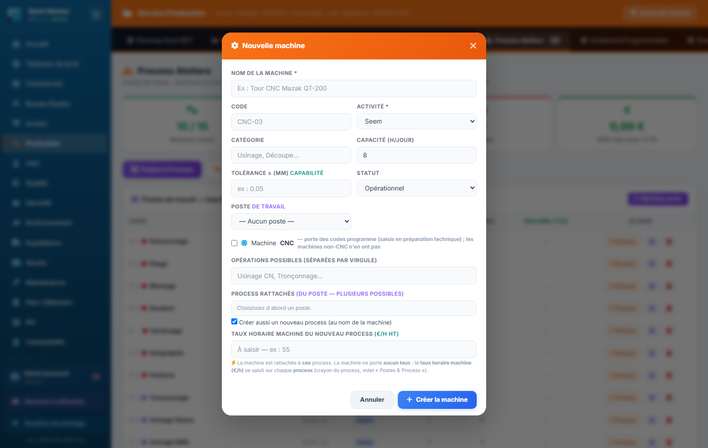
Nouvelle machine — plus de « Coût machine (€/h) » ; la case « Créer aussi un nouveau process » fait apparaître le taux horaire machine de ce process.
Disparu : le champ « Coût machine (€/h) » (défaut 35) n'existe plus. Le coût horaire de fonctionnement se saisit désormais sur le process machine, pas sur la machine.
Comment se calcule le coût d'une étape
Chaque étape de gamme (nomenclature du Bureau d'Études) a quatre temps. Chacun est payé en homme, en machine, ou les deux :
Temps (colonne de la gamme)
Homme
Machine
Compté
Réglage homme (ROP)
✔
—
une fois par lot
Réglage machine (RGM)
✔
✔
une fois par lot
Temps homme variable (MO)
✔
—
par pièce
Temps machine variable (Mach)
—
✔
par pièce
Les heures homme sont payées au coût chargé RH (moyenne des opérateurs du site pour un chiffrage ; taux de l'opérateur pointé pour un coût réel). Les heures machine sont payées au taux horaire machine du process de l'étape — seulement si ce process est de type machine.
Exemple — lot de 10 pièces, process machine à 60 €/h, coût chargé moyen 35 €/h. Réglage homme 0,5 h · réglage machine 1 h · temps homme 0,1 h par pièce · temps machine 0,2 h par pièce. Heures homme = 0,5 + 1 + 0,1 × 10 = 2,5 h → 2,5 × 35 = 87,50 €. Heures machine = 1 + 0,2 × 10 = 3 h → 3 × 60 = 180,00 €.
Coût de l'étape = 267,50 € pour le lot, soit 26,75 € par pièce. Le réglage machine compte deux fois — une fois l'opérateur, une fois la machine — parce qu'il occupe les deux.
Pas à pas
Créer un poste : « Nouveau poste » → nom, activité, couleur → le poste apparaît (vide). Rattachez-y ensuite machines et process.
Créer un process dans un poste : bouton + Process de la ligne du poste → nom, type (Machine / Manuel / OAS), machine rattachée le cas échéant, et pour un process machine son taux horaire machine (ou vide : « taux à saisir »).
Saisir ou corriger un taux horaire machine : dépliez le poste → crayon du process → champ « Taux horaire machine (€/h HT) » → Enregistrer. Le nouveau taux s'applique aux chiffrages (nomenclatures, analyse DT) dès leur prochain affichage et aux coûts réels calculés ensuite.
Changer le type d'un process : crayon → Type. En passant en « Manuel », le taux est grisé (il n'est plus utilisé) ; en revenant en « Machine », votre saisie est restituée.
Déclarer une panne : volet Machines → bouton « Panne » sur la ligne → la machine passe en arrêt et le service Maintenance est saisi ; « Réparée » la remet en service.
Règles & points d'attention
Seul le process porte un taux horaire, et seulement le process machine. Les machines, les postes et l'OPEX n'en portent plus : fini le « Taux/h effectif » du poste, le taux manuel de poste et l'« OPEX annuel estimé ».
Taux de départ : à la mise en place, chaque process machine a reçu l'ancien coût horaire de sa machine — souvent 35 €/h, l'ancienne valeur par défaut. Vérifiez-les un par un.
Le temps homme vaut le taux horaire chargé de la fiche salarié (service RH). Sans taux chargé renseigné, il compte 0 € et les écrans affichent « coût chargé RH à renseigner ».
OPEX réel d'une machine = somme des sorties stock « consommable » déclarées sur ses BDT (quantité × prix d'achat HT), en temps réel. L'OPEX d'un poste = somme de ses machines + consommables tirés directement au poste. Ces montants restent en euros ; ils ne se convertissent jamais en €/h.
Un poste ou process OAS n'apparaît pas au planning ; ses process alimentent les types de bain de l'onglet OAS.
Supprimer une machine détache ses process : ils restent des process machine, avec leur taux, à rattacher à une autre machine (la confirmation indique combien).
Le graphique « Évolution OPEX mensuel » affiché sous le parc machines n'est pas encore relié aux données réelles : ne vous y fiez pas.
Attention : supprimer un process ou une machine est définitif (confirmation demandée). Un process machine sans taux est signalé « taux à saisir » : tant qu'il n'est pas saisi, le temps machine de ce process vaut 0 € dans les coûts de revient — ils sont sous-évalués.
Base en ligne pas encore mise à jour : si l'enregistrement d'un taux affiche « Taux horaire machine NON enregistré… jouez cloud-7… », l'administrateur doit d'abord passer le script de mise à jour de la base. En attendant, les taux affichés portent la mention « transition » (repris de la machine) et les coûts ne changent pas.
6
Dashboard Programmation
À quoi ça sert. Le tableau de bord de la charge : combien de commandes et de lots sont en cours, combien de BDT restent actifs, et surtout si la capacité des opérateurs présents absorbe la charge de la semaine. C'est l'outil d'arbitrage de Sylvie avant de programmer.
Ce que vous voyez
4 cartes KPI : Commandes en cours (avec le nombre en retard), Lots en cours (avec les bloqués), BDT actifs, Charge journée en % (heures de BDT / capacité = opérateurs × 8 h).
« Charge opérateurs par jour » : un histogramme Lun → Dim, calculé sur les présences réelles (présents × 8 h par jour) ; les barres passent de vert à orange (≥ 70 %) puis rouge (≥ 85 %), le jour courant est encadré. Navigation par semaine avec ‹ › et le sélecteur de date.
Deux tableaux : Lots en cours · étape de production (Planifié / Production / Sous-traitance / Bloqué, fin prévue) et Commandes · avancement (barre %, OK / Retard).
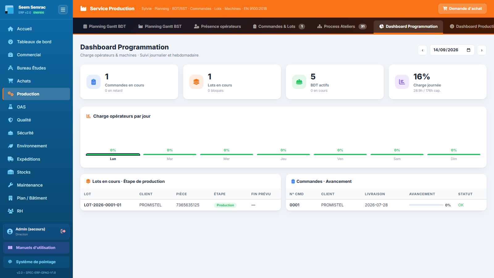
Dashboard Programmation — surveillez l'histogramme de charge : un jour rouge (≥ 85 %) signifie qu'il faut lisser, décaler ou sous-traiter.
Pas à pas
Consultez la charge de la semaine : si un jour dépasse 85 %, retournez au planning (onglet 1) pour déplacer des BDT vers un jour creux, ou vérifiez la présence (onglet 3) pour renforcer l'équipe.
Contrôlez les tableaux du bas : un lot « Bloqué » ou une commande « Retard » se traite en priorité — ouvrez la fiche depuis Commandes & Lots.
Règles & points d'attention
La capacité quotidienne dépend des présences saisies : un jour sans présence programmée affiche 0 % — pensez à remplir l'onglet Présence.
7
Dashboard Production
À quoi ça sert. Le tableau de bord de la performance : rendement des machines (TRS/TRG/TRE), coûts d'exploitation du parc (OPEX) et liste des BDT actifs du jour. Il est calculé sur les données réelles tracées par les soldages au PIN.
Ce que vous voyez
Trois jauges : TRS (Taux de Rendement Synthétique), TRG (Global), TRE (Économique), accompagnées des trois composantes en barres : Disponibilité (machines opérationnelles), Performance (temps alloué / temps réel des BDT soldés) et Qualité (BDT soldés sans NC).
OPEX réel machines · YTD : par machine, l'utilisation (charge BDT / capacité hebdo) et l'OPEX réel cumulé de l'année (« — » s'il n'y a eu aucune consommation), avec le total du parc. Plus de taux horaire ni d'OPEX estimé.
BDTs du jour : les BDT actifs (client, pièce, opération, priorité, statut, durée) avec un bouton « Dupliquer » pour recréer un BDT identique et le réaffecter.
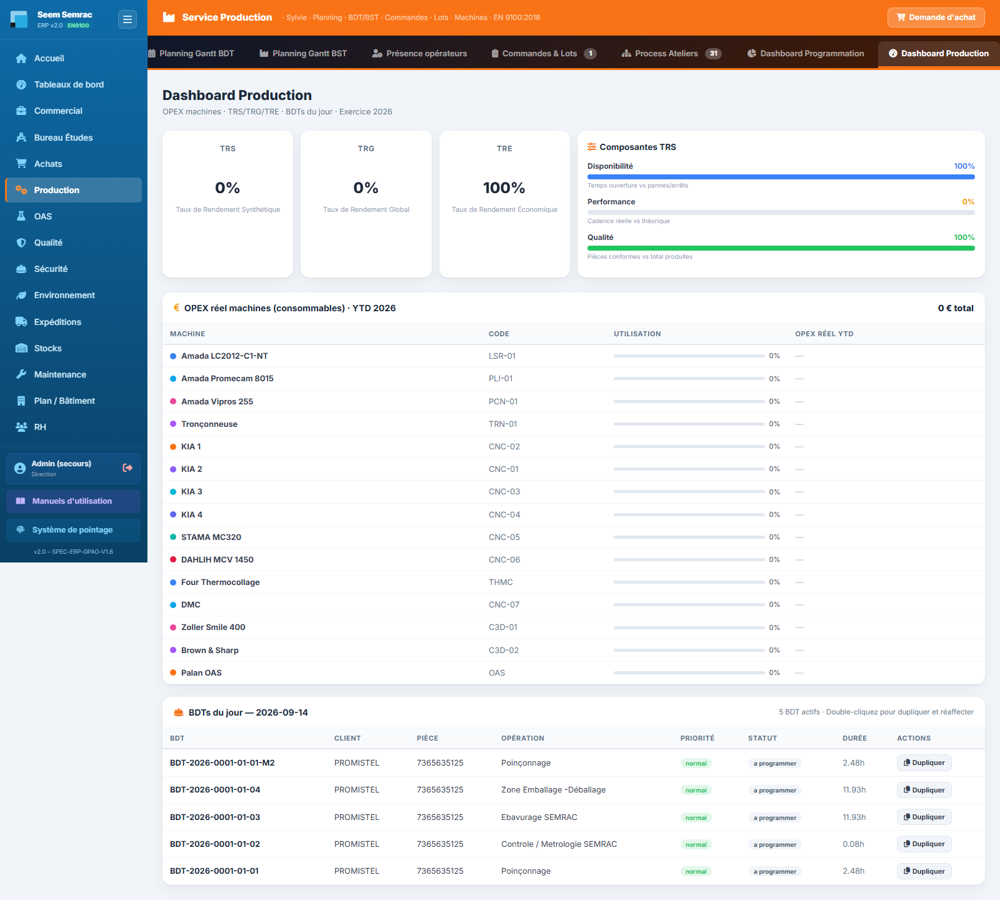
Dashboard Production — jauges TRS/TRG/TRE avec leurs composantes, table OPEX machines et BDT actifs du jour.
Pas à pas
Lisez le TRS puis identifiez la composante faible : Disponibilité basse → voir Maintenance (pannes) ; Performance basse → temps réels supérieurs aux temps alloués (revoir les gammes) ; Qualité basse → NC au soldage (voir la Qualité).
Pour dupliquer un BDT récurrent : bouton « Dupliquer » sur la ligne → choisissez l'opérateur et l'heure de début → « Dupliquer & Affecter ».
Règles & points d'attention
Ces indicateurs ne valent que si les BDT sont réellement réceptionnés et soldés au fil de l'eau — les temps réels viennent exclusivement des soldages au PIN.